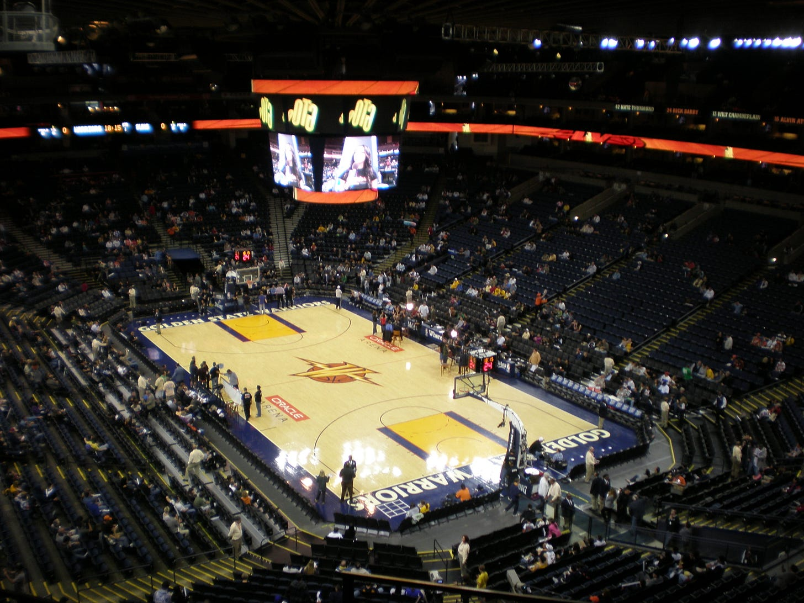
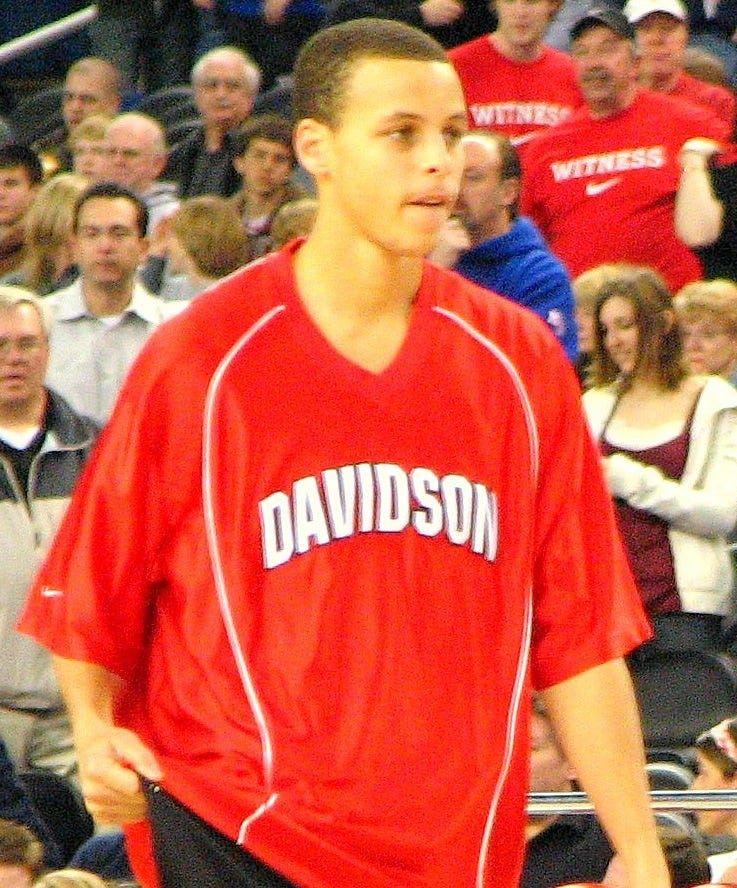
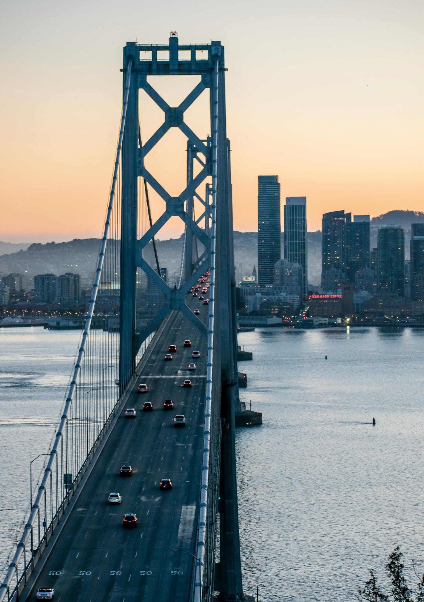
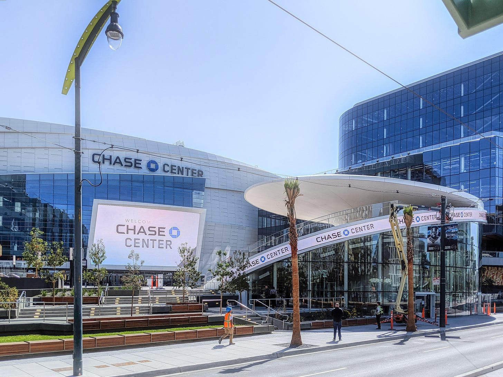

The NBA adopted the three-point arc for the 1979-80 season. For twenty-five years, it was a novelty tolerated by coaches who understood the game as a series of high-percentage two-point possessions played inside the paint. In the 2001-02 season, teams averaged 14.7 three-point attempts per game. That season, the league converted three-pointers at 35.4% and two-pointers at 46.5%. A three at 35.4% generates 1.06 expected points per attempt. A two at 46.5% generates 0.93. The three-pointer wasn’t marginally better, but 14% more efficient.
A few people noticed. Mike D’Antoni’s Suns launched 25.6 threes per game in 2005-06 when the league averaged 16. Daryl Morey would eventually build a Rockets team that attempted 45 per game, but they were dismissed as gimmicks and unable to win championships.
Stephen Curry validated the thesis, but no one saw it coming. No major Division I program offered Curry a scholarship. Virginia Tech, where his father Dell played, offered a walk-on spot with a promise of a scholarship down the road but the word “redshirt” came first. Duke’s staff reportedly labeled him “too short, too thin and too one-dimensional.”
As a sophomore, Curry scored 128 points in four NCAA Tournament games, beat a 7-seed, a 2-seed, and a 3-seed in sequence, and lost to the eventual national champion Kansas by two points in the Elite Eight. He came back junior year and led the entire nation in scoring at 28.6 per game.
The 2009 NBA Draft mispriced him again. The scouting report read like a rejection letter: “Far below NBA standard in regard to explosiveness and athleticism.” “Not a natural point guard that an NBA team can rely on to run a team.” Every concern was about his body. The Minnesota Timberwolves, holding picks five and six, took two point guards — Ricky Rubio and Jonny Flynn — and passed on Curry twice.
And that doesn’t even include the ankle. In 2011-12, a lockout-shortened season, Curry suffered five separate sprains in 26 games. He turned his ankle in bizarre, non-contact situations. Two surgeries. In between, the Milwaukee Bucks had a chance to acquire Curry in the Andrew Bogut trade. Their medical staff rejected him, and the Warriors kept him by default.
On October 31, 2012, five weeks after medical clearance, Curry signed a four-year, $44 million extension — roughly 55 cents on the dollar. “That’s good money,” he said. “Support my family. Got a lot of security. I just wanna be healthy.”
During four years on that contract, Curry won two MVPs — the second unanimously, the first in NBA history — led the Warriors to a 73-9 season, and transformed the sport’s geometry so completely that every youth basketball player in the world started shooting from 28 feet. He set the three-point record three times: 272, then 286, then an absurd 402 that no one has matched. He was the 74th highest-paid player in the NBA while being the most valuable. In 2015-16, the Warriors averaged 31.6 three-point attempts per game, double the league average a decade earlier. By 2024-25, the league average reached approximately 37. Curry proved that the market had mispriced it for a quarter century.
The below-market contract built a dynasty. The cap savings let the Warriors sign 2015 Finals MVP Andre Iguodala to a deal that would have been mathematically impossible if Curry had been on the max. The savings let them retain Klay Thompson and Draymond Green. And when the salary cap spiked from $70 million to $94 million in 2016, Curry was still making $12.1 million, leaving enough room to sign Kevin Durant outright. Durant won Finals MVP in 2017 and 2018.

The Moneyball parallel works and doesn’t. Billy Beane found a market inefficiency (on-base percentage was undervalued), built a system to exploit it, and competed against teams that outspent him nearly 3-to-1. Beane proved the insight was right. He still couldn’t win a championship because the structure of baseball allowed richer teams to buy their way past him. Lacob is a Kleiner Perkins partner and recognized the same pattern VCs see in startups: an undervalued asset in an inefficient market, a contrarian thesis, and a window before the rest of the market corrects.
The NBA has a salary cap, a luxury tax, a salary floor, and revenue sharing. It’s a closed league with 30 permanent franchises, no relegation, and a national media deal that guarantees every team a nine-figure annual check. The floor is high. The variance is low. It’s a bond with equity upside.
In 2010, Joe Lacob and Peter Guber bought the Golden State Warriors for $450 million. Fifteen years later, Sportico valued the franchise at $11.33 billion. That’s a 25x return, roughly 24% annualized — the greatest sports investment in American history by rate of return.
The product on the court was some of the most beautiful basketball the world had ever seen.
Curry’s three-point shot itself was art. His release turned the pull-up three into something that looked effortless and physically impossible for anyone else. The ball left his hand on a high arc and the backspin was so perfect that misses hit soft. When he was on, the arena knew before the ball reached the rim. The crowd rose on the release.
The ball movement was the deeper beauty. The 2015-16 Warriors averaged 28.1 assists per game on 45.6 field goals. Sixty-two percent of their made baskets came off a pass from a teammate. Kerr, who played under Phil Jackson in Chicago and Popovich in San Antonio, built something that borrowed from both and added Curry’s gravity, which warped defenses so completely that simply standing at the three-point line created an open lane for someone else.
Before Curry, the NBA’s aesthetic peaks were individual. The Warriors under Steve Kerr played a style that made the system beautiful. Five players in constant motion. The ball swinging from corner to wing to top of the key and back in two seconds. Curry running off three screens, catching the pass, and releasing in 0.4 seconds from 30 feet — the fastest release in NBA history — while four teammates spaced to the right spots because they knew it was going in.
The dynasty years of 2015 through 2019, five consecutive Finals, three championships were the most aesthetically dominant run in modern NBA history.
The ownership syndicate reads like a Sand Hill Road cap table.
Kleiner Perkins partner Joe Lacob combined with Peter Guber (producer of Batman, Rain Man, and The Color Purple) to lead a group that included Mark Stevens of Sequoia Capital, Bob Kagle of Benchmark, John Walecka of Redpoint Ventures, Chad Hurley of YouTube, Nick Swinmurn of Zappos, and Chamath Palihapitiya of Social Capital. They outbid Larry Ellison, the founder of Oracle, the company who sponsored Oakland’s Oracle Arena.
When Lacob fired head coach Mark Jackson after a 51-31 season, he explained it the way a board replaces a founding CEO: “You’ve taken this company to a certain level. Now we need someone else who can come in and go the rest of the way.” The someone else was Steve Kerr. The Warriors won the 2016 ENCORE Award for Entrepreneurial Company of the Year from Stanford Graduate School of Business.
The Warriors played in Oakland for 47 years. Oakland gave the franchise its identity.
In 2007, the Warriors made the playoffs for the first time in thirteen years and upset the top-seeded Dallas Mavericks as the eighth seed, the first time an 8 had beaten a 1 since the NBA went to best-of-seven series. Steve Kerr, then a TNT commentator, called it “the greatest atmosphere I’d ever experienced in a basketball game.”. Jason Richardson arrived two hours before Game 3 to find the arena already full.
Oracle Arena was an ugly building that made beautiful noise. The concrete was stained. The bathrooms were grim. The concourses were narrow and smelled like decades of spilled beer. There was nothing premium about it. Fans were there because the Warriors were a team that had been terrible for twenty years and finally, impossibly, became the best team in the world, and the people who had showed up during the terrible years felt that the beautiful years belonged to them in a way that couldn’t be bought.
When the Warriors won their first championship in 2015 after forty years, nearly one million people filled Oakland for the parade. When they repeated in 2017, 1.5 million showed up. In 2018, a third parade, a million more. Three championship parades. Three million people on the streets of Oakland.
The move to San Francisco was announced on May 22, 2012 — before the first championship, before the dynasty, before the $11 billion valuation. Lacob always intended to leave.

The Oakland-to-San Francisco move required a geographic condition that almost doesn’t exist anywhere else in American sports: two distinct cities, 11 miles apart, with a 40% income gap, where the team was stranded in the poorer one and the richer one had available land. The $3.2 trillion tech ecosystem on one side of a bridge, a crumbling arena on the other.
Chase Center is a $1.4 billion, 18,064-seat, privately financed arena. Premium seating generates approximately $2.5 million per game from suites alone. Courtside seats run $35,000 per night. Total ticket revenue exceeds $5 million per game, the highest in the NBA. Suites cost up to $2 million per season. Before the arena opened, the Warriors had secured $2 billion in committed contracts for suites and sponsorships.

JPMorgan Chase’s naming rights deal is estimated at $300 million over 20 years. Rakuten’s jersey patch was $20 million per year when signed in 2017, the largest in NBA history at the time and then renewed in 2022 at north of $40 million annually. The Warriors generate nearly $200 million per year in sponsorship revenue, nearly double any other NBA team.
Total annual revenue: $833 million in 2024-25. That’s 34% higher than the next closest team, the Knicks, and roughly 7.5x what the franchise generated when Lacob bought it.
Lacob described his strategy in three phases. Phase 1: build a championship team. Phase 2: make it a great business. Phase 3: “I want this to become more than a basketball team. I want it to become a sports entertainment, media and technology company.” He has explicitly referenced Disney’s evolution from theme parks to a diversified entertainment conglomerate as the template.
The non-basketball business is now larger than most NBA teams’ entire operations. Chase Center hosts nearly 200 events per year beyond basketball. Consumer spending around those events grew 131% in two years, from $160 million in fiscal 2022 to $370 million in fiscal 2024. The Warriors make more money when there is no basketball on the floor.
The real estate tells the rest. The Warriors and their development partners control 11 acres of Mission Bay surrounding Chase Center, branded as Thrive City. Uber leases 580,000 square feet as its global headquarters. A 13-story mixed-use tower is under construction: 129-room hotel, 21 luxury condominiums, 25,000 square feet of retail. OpenAI has leased 800,000 square feet in the surrounding blocks. The arena is the anchor tenant.
The Warriors spend approximately $640 million per year to generate $833 million in revenue. Operating income: $142 million. An 18% margin is healthy for any business, and remarkable for one that employs the most expensive labor force in professional basketball.
In 2023-24, the Warriors paid $177 million in luxury tax on top of their $206 million payroll. Combined player cost: $383 million. The salary cap was $70 million when the dynasty began. It’s $155 million now. The Warriors have consistently spent two to three times the cap.
Under Lacob, the Warriors have paid over $678 million in cumulative luxury tax — more than any franchise in NBA history, by a quarter-billion dollars. The Warriors are the most profitable franchise in the NBA and they’ve paid more luxury tax than anyone in history.
The Warriors’ franchise value has climbed 60% since the last championship. In 2022, they won the title and were valued at $7 billion. In 2023, after they lost in the second round, they were valued at $7.7 billion. In 2024, they lost in the play-in and were valued at $8.8 billion. In 2025, after a second-round exit, they were valued at $11.3 billion.
The $11 billion rests on brand equity that was built during the beautiful years and is now being spent, not replenished. The 32.6 million Instagram followers were accumulated during the dynasty. The Rakuten deal renews based on what the Warriors were.
Curry is 37. Is this where Lacob sells?